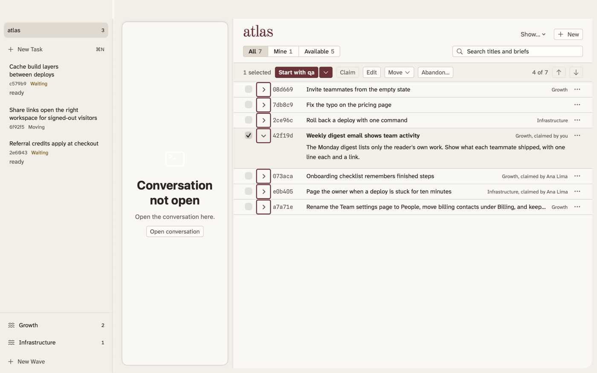
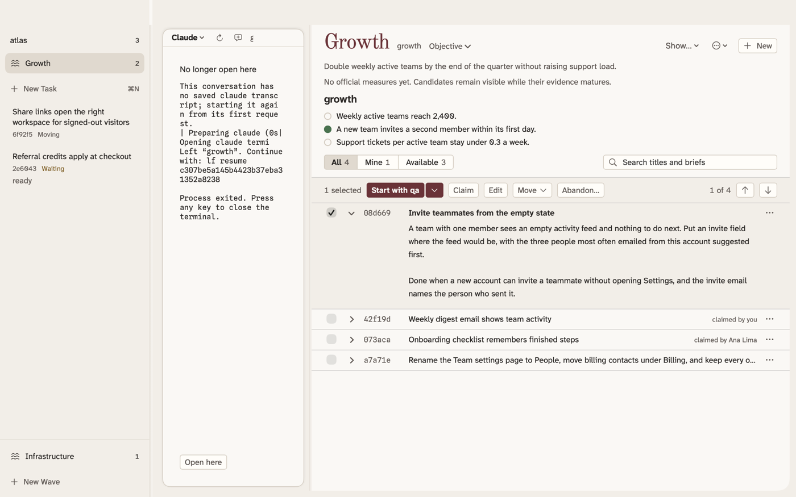
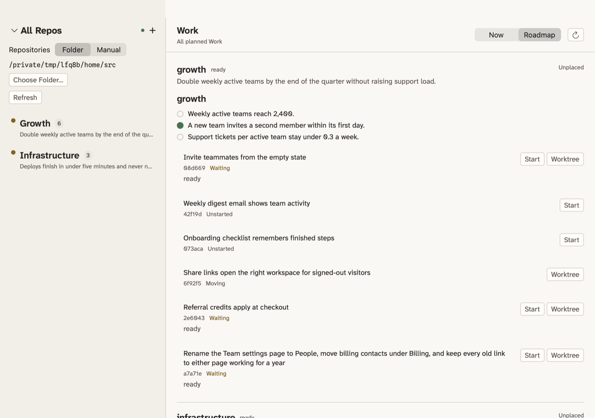
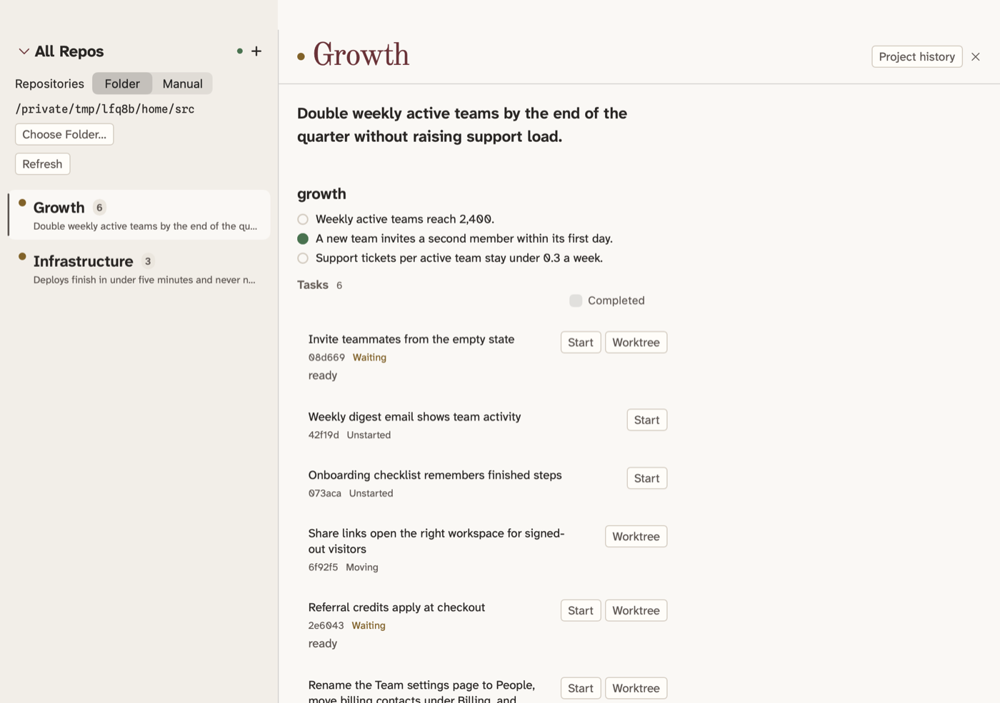
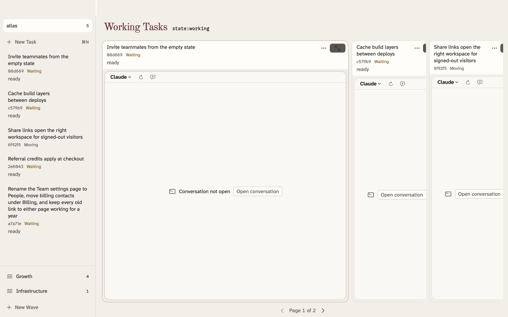
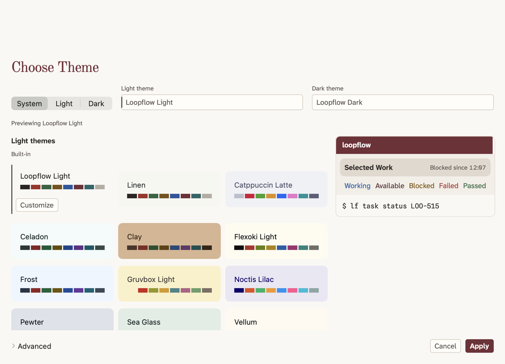
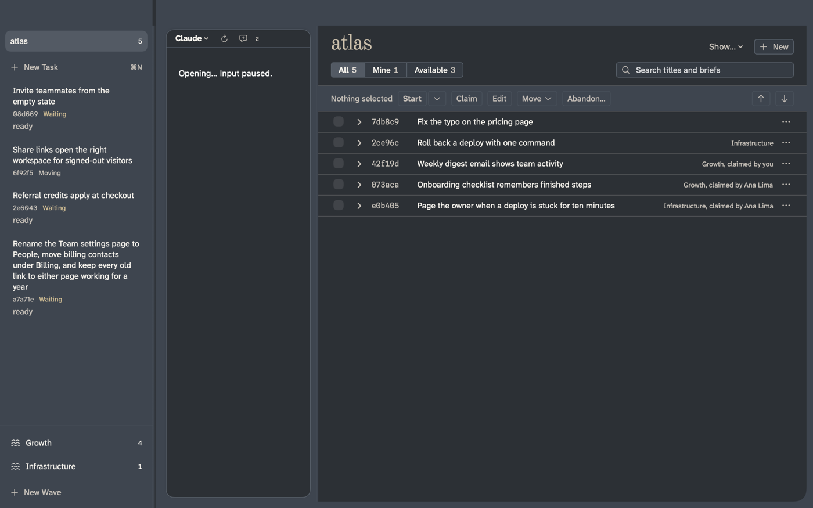
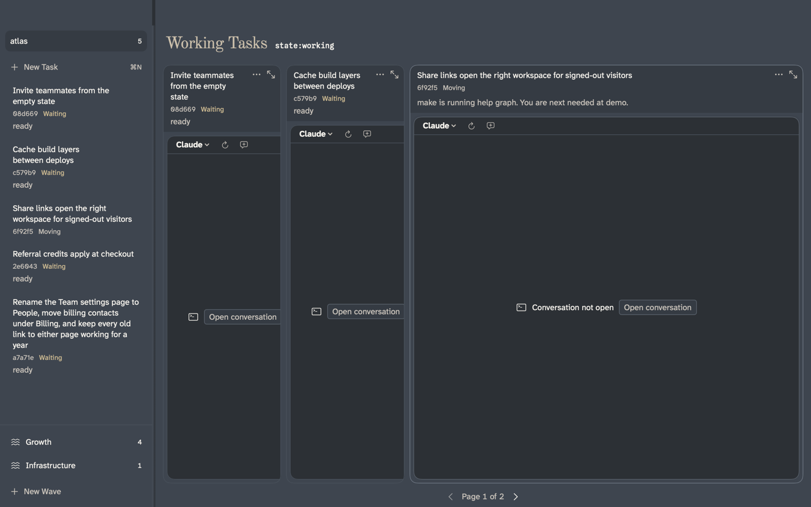
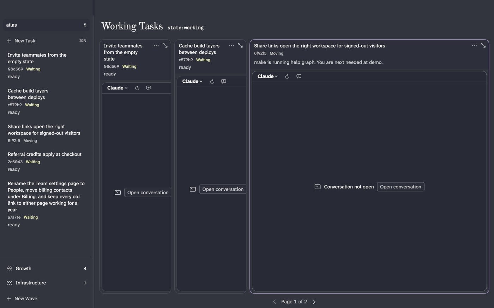
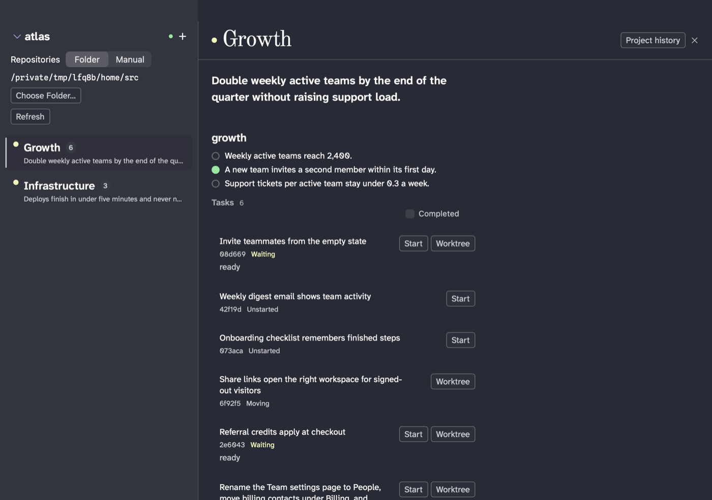

The branch app ran as an isolated bundle (com.loopflow.mac.qa8b92c6.dev) on a private
Machine: its own HOME and LF_HOME, the branch lf server run, a disposable
repository "atlas" with two Waves (Growth, Infrastructure), ten Tasks, objectives with key results, a
second person's claims and a held Graph. The screen was locked, so the app was driven by a local
file-command hook (snapshot, click, menu item) that is not in the commit. Every picture below is the
real window drawn by the real app from the real server.
Opened the repository, then the Growth backlog. Clicked the filter segments, a checkbox, two checkboxes, a disclosure, the objective disclosure, and Start.

Fixed. The row chevron used WorkPlainButtonStyle, which draws a focus ring from the
focused list. It is a plain button now (BacklogView.swift).





Opened the Portfolio (loopflow://portfolio), switched Now and Roadmap, opened Growth, clicked a
Task row.




Fixed. The server marks an unstarted Task waiting, reason "ready". TaskStanding
now counts waiting as a need only when the Task has started or its recommended action is not
Start (TaskStanding.swift, test unstartedIsNotWaiting). The pictures were taken with
a slightly wider rule (any unstarted Task); the narrower one came from the test fixture, where an
unstarted Task waits on a pull request merge and keeps its line. Every Task in these pictures has Start
as its next move, so both rules draw them the same; the app was not relaunched after the narrowing.
A click on a Task row opened that Task in its repository window.
lf desktop working-tasks against the bundle. Looked at three tiles of different widths and
paged.


Fixed. "Open in full" and "Hide" are plain buttons with accessibility labels, sized before the
title, and the tile body no longer widens the header past its slot (DashboardView.swift).
The header is the Task row; the selected tile's workflow is the sentence "make is running help graph. You are next needed at demo."; "Page 1 of 2" is sans; the query is mono.
Opened Settings from the app menu.


Serif title, no "Mode" caption. The sample shows a title strip, a selected row with "Blocked since 12:07", the five status words in their colors, a terminal line and the accent Apply button.
Set the theme with lf set --global theme and relaunched: Loopflow Dark, then Dracula copied
from Ghostty's themes into $LF_HOME/themes/.








Text, hairlines, selection and status colors hold in all three. Nothing was unreadable.
| Command | Result |
|---|---|
scripts/test_desktop.sh --filter 'TaskStandingTests|TaskRowTests|BacklogViewTests|DashboardWorkspaceTests|DesignDisciplineTests|RoadmapViewTests' | 51 tests passed. The first run failed 6: the wider unstarted rule dropped a merge-request line the fixture expects; the rule was narrowed and the run repeated. |
| the plan's acceptance grep | prints nothing |
config.yaml without a theme. Hook clicks are unreliable on a first press, so this is unknown, not a finding. Themes were set from the CLI.next_move.reason; it tells nobody what to do, and on a tile it takes the place of the workflow sentence. The wording is the server's and this change has no Rust; question 38.loopflow://atlas/wave/growth narrows the sidebar to Growth's Tasks but the page is titled "atlas" and lists the repository's whole backlog, with "atlas 5" still selected (Dracula backlog picture). Not from this change.Nothing running: the private server, its holder, the held Graph and the app were stopped, the bundle
unregistered and deleted. The hook is kept as .lf/qa/QAHook.swift with the method in
.lf/qa/desktop.md; it is not in the app target.